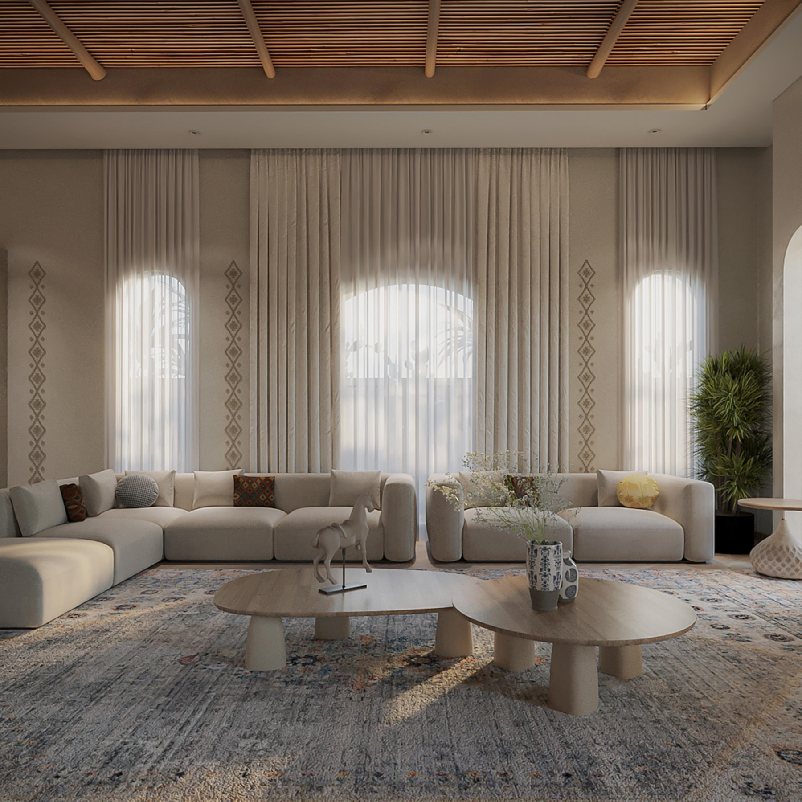

Majlis interiors and the quiet details behind them — layered textiles, Najdi craft and the finishing touches that make a house feel complete.
Each interior we design balances modern comfort with Najdi and Salmani craft — from grand reception majlis spaces down to the smallest hand-finished detail.
Browse the interior design projects below.